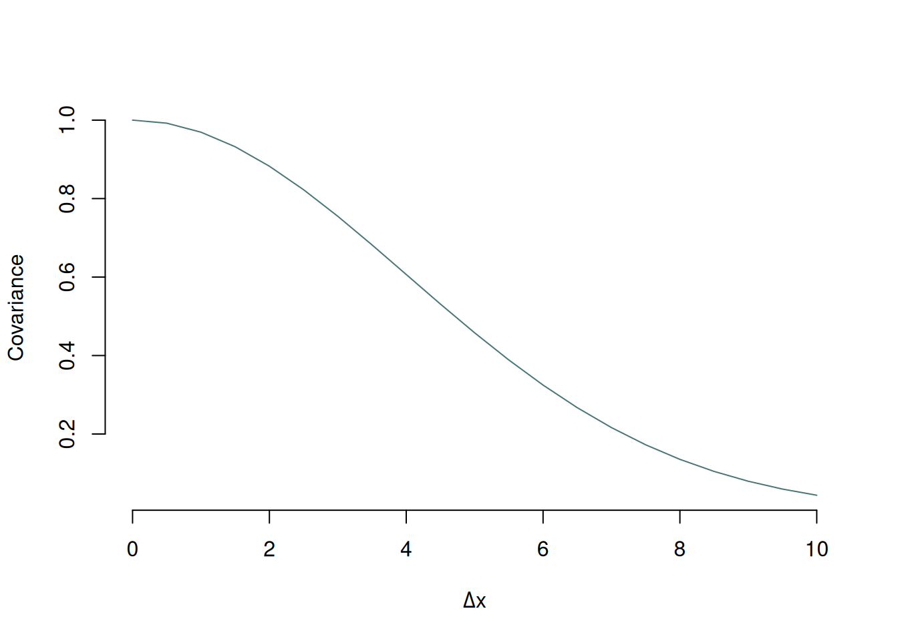
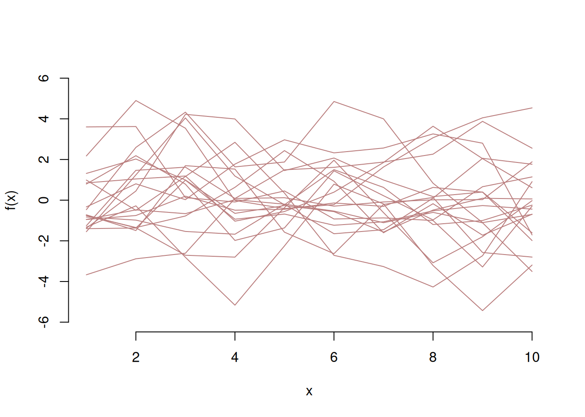
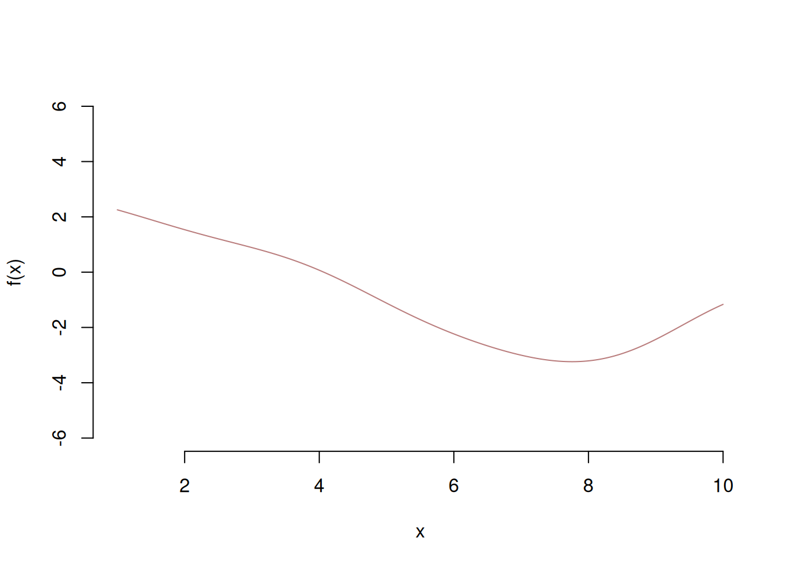
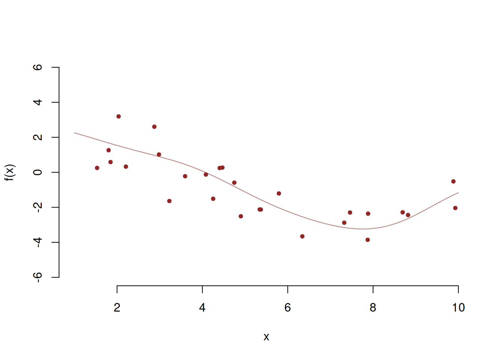
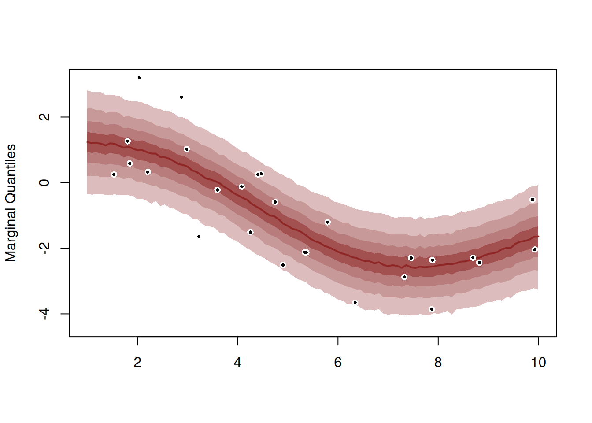
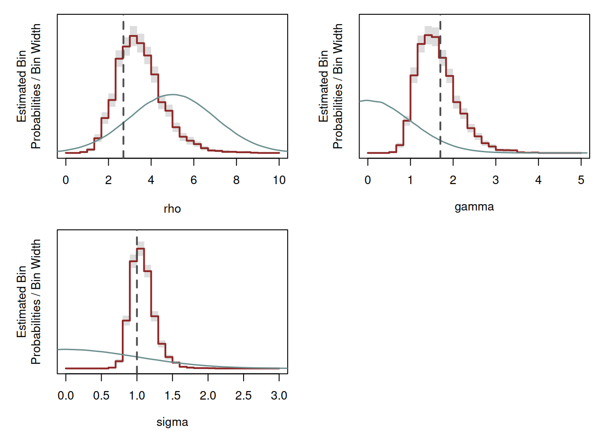

set.seed(12345)
k <- function(delta_x, gamma, rho){
return(gamma^2*exp(-1/2*(delta_x/rho)^2))
}Learning GPs
Simulate data from a GP!
Everything is well explained in Mike’s case study, but the following code will give you some ideas how to generate functional behaviors from a GP in practice, and then how to fit a GP!
The covariance function
Here we focus on the exponentiated quadratic covariance function, that can be written in R as:
Which allows to plot a covariogram like this (see Mike’s case study):
delta_x <- seq(0, 10, 0.5)
plot(x = delta_x,
y = k(delta_x, gamma = 1, rho = 4), type = 'l',
bty = 'n', col = "#487575",
xlab = expression(Delta*'x'), ylab = 'Covariance')
From covariance to sampling
With a finite number of covariate values for which we want to make predictions, the finite-dimensional projection of a GP essentially become a multinormal distribution. The covariance matrix of this distribution is determined by the covariance function.
For example, let’s say we have a grid 10 points evenly distributed fromn 1 to 10. We can compute a distance matrix as follows:
grid <- data.frame(x1 = seq(1,10,1), x2 = seq(1,10,1))
dmat <- as.matrix(dist(grid, diag = T, upper = T))
print(round(dmat, 2)) 1 2 3 4 5 6 7 8 9 10
1 0.00 1.41 2.83 4.24 5.66 7.07 8.49 9.90 11.31 12.73
2 1.41 0.00 1.41 2.83 4.24 5.66 7.07 8.49 9.90 11.31
3 2.83 1.41 0.00 1.41 2.83 4.24 5.66 7.07 8.49 9.90
4 4.24 2.83 1.41 0.00 1.41 2.83 4.24 5.66 7.07 8.49
5 5.66 4.24 2.83 1.41 0.00 1.41 2.83 4.24 5.66 7.07
6 7.07 5.66 4.24 2.83 1.41 0.00 1.41 2.83 4.24 5.66
7 8.49 7.07 5.66 4.24 2.83 1.41 0.00 1.41 2.83 4.24
8 9.90 8.49 7.07 5.66 4.24 2.83 1.41 0.00 1.41 2.83
9 11.31 9.90 8.49 7.07 5.66 4.24 2.83 1.41 0.00 1.41
10 12.73 11.31 9.90 8.49 7.07 5.66 4.24 2.83 1.41 0.00It becomes then straightforward to apply the covariance function to this matrix, for the grid of points we consider:
cov <- apply(dmat, 1:2, k, gamma = 1, rho = 7)
print(round(cov, 2)) 1 2 3 4 5 6 7 8 9 10
1 1.00 0.98 0.92 0.83 0.72 0.60 0.48 0.37 0.27 0.19
2 0.98 1.00 0.98 0.92 0.83 0.72 0.60 0.48 0.37 0.27
3 0.92 0.98 1.00 0.98 0.92 0.83 0.72 0.60 0.48 0.37
4 0.83 0.92 0.98 1.00 0.98 0.92 0.83 0.72 0.60 0.48
5 0.72 0.83 0.92 0.98 1.00 0.98 0.92 0.83 0.72 0.60
6 0.60 0.72 0.83 0.92 0.98 1.00 0.98 0.92 0.83 0.72
7 0.48 0.60 0.72 0.83 0.92 0.98 1.00 0.98 0.92 0.83
8 0.37 0.48 0.60 0.72 0.83 0.92 0.98 1.00 0.98 0.92
9 0.27 0.37 0.48 0.60 0.72 0.83 0.92 0.98 1.00 0.98
10 0.19 0.27 0.37 0.48 0.60 0.72 0.83 0.92 0.98 1.00Using this covariance matrix, we can then simulate some GP functional behaviors along this grid:
f <- MASS::mvrnorm(20, rep(0,10), cov)
plot(x = seq(1,10,1), y = f[1,],
type = 'l', bty = 'n', col = "#B97C7C",
ylim = c(-3,3), xlim = c(1,10),
xlab = 'x', ylab = 'f(x)')
for(i in 2:20){
lines(x = seq(1,10,1), y = f[i,], col = "#B97C7C")
}
We can repeat the process with different parameters for the covariance function:
cov <- apply(dmat, 1:2, k, gamma = 2, rho = 1.5)
f <- MASS::mvrnorm(20, rep(0,10), cov)
plot(x = seq(1,10,1), y = f[1,],
type = 'l', bty = 'n', col = "#B97C7C",
ylim = c(-6,6), xlim = c(1,10),
xlab = 'x', ylab = 'f(x)')
for(i in 2:20){
lines(x = seq(1,10,1), y = f[i,], col = "#B97C7C")
}
This looks a bit discontinuous as we sampled only a grid of 10 points.
If we increase the resolution of the grid, we obtain something smoother.
n <- 1000
grid <- data.frame(x1 = seq(1,10, length.out = n), x2 = seq(1,10, length.out = n))
dmat <- as.matrix(dist(grid, diag = T, upper = T))
cov <- apply(dmat, 1:2, k, gamma = 2, rho = 1.5)
f <- MASS::mvrnorm(20, rep(0,n), cov)
plot(x = seq(1,10, length.out = n), y = f[1,],
type = 'l', bty = 'n', col = "#B97C7C",
ylim = c(-6,6), xlim = c(1,10),
xlab = 'x', ylab = 'f(x)')
for(i in 2:20){
lines(x = seq(1,10, length.out = n), y = f[i,], col = "#B97C7C")
}
Simulate observations that arise from a GP
What if we have a normal observational model with a variance \(\sigma^2\)? Let’s say that the functional relationship between our observations is the following GP:
n <- 1000
grid <- data.frame(x1 = seq(1,10, length.out = n), x2 = seq(1,10, length.out = n))
dmat <- as.matrix(dist(grid, diag = T, upper = T))
rho_sim <- 2.7
gamma_sim <- 1.7
cov <- apply(dmat, 1:2, k, gamma = gamma_sim, rho = rho_sim)
f <- MASS::mvrnorm(1, rep(0,n), cov)
plot(x = seq(1,10, length.out = n), y = f,
type = 'l', bty = 'n', col = "#B97C7C",
ylim = c(-6,6), xlim = c(1,10),
xlab = 'x', ylab = 'f(x)')
We can then simulate observations with a measurement error \(\sigma\):
nobs <- 27
sigma_sim <- 1
idxs <- sample(1:n, nobs)
x <- seq(1,10, length.out = n)[idxs]
fx <- f[idxs]
y <- rnorm(nobs, fx, sd = sigma_sim)
plot(x = seq(1,10, length.out = n), y = f,
type = 'l', bty = 'n', col = "#B97C7C",
ylim = c(-6,6), xlim = c(1,10),
xlab = 'x', ylab = 'f(x)')
points(x = x, y = y,
pch = 20, col = "#8F2727")
Fitting our first GP!
Below, the Stan code written by Mike (+ some priors…):
functions {
vector gp_pred_rng(real[] x2,
vector y1, real[] x1,
real alpha, real rho, real sigma, real delta) {
int N1 = rows(y1);
int N2 = size(x2);
vector[N2] f2;
{
matrix[N1, N1] K = cov_exp_quad(x1, alpha, rho)
+ diag_matrix(rep_vector(square(sigma), N1));
matrix[N1, N1] L_K = cholesky_decompose(K);
vector[N1] L_K_div_y1 = mdivide_left_tri_low(L_K, y1);
vector[N1] K_div_y1 = mdivide_right_tri_low(L_K_div_y1', L_K)';
matrix[N1, N2] k_x1_x2 = cov_exp_quad(x1, x2, alpha, rho);
vector[N2] f2_mu = (k_x1_x2' * K_div_y1);
matrix[N1, N2] v_pred = mdivide_left_tri_low(L_K, k_x1_x2);
matrix[N2, N2] cov_f2 = cov_exp_quad(x2, alpha, rho) - v_pred' * v_pred
+ diag_matrix(rep_vector(delta, N2));
f2 = multi_normal_rng(f2_mu, cov_f2);
}
return f2;
}
}
data {
int<lower=1> N_obs;
real x_obs[N_obs];
vector[N_obs] y_obs;
int<lower=1> N_pred;
real x_pred[N_pred];
}
parameters {
real<lower=0> rho;
real<lower=0> gamma;
real<lower=0> sigma;
}
model {
matrix[N_obs, N_obs] cov = cov_exp_quad(x_obs, gamma, rho)
+ diag_matrix(rep_vector(square(sigma), N_obs));
matrix[N_obs, N_obs] L_cov = cholesky_decompose(cov);
gamma ~ normal(0,1);
rho ~ normal(5, 2);
sigma ~ normal(0,1);
y_obs ~ multi_normal_cholesky(rep_vector(0, N_obs), L_cov);
}
generated quantities {
vector[N_pred] f_pred = gp_pred_rng(x_pred, y_obs, x_obs, gamma, rho, sigma, 1e-10);
real y_pred[N_pred] = normal_rng(f_pred, sigma);
}Let’s fit the data we simulated!
data <- list(
N_obs = nobs,
x_obs = x,
y_obs = y,
N_pred = 100,
x_pred = seq(1, 10, length.out = 100)
)
gp_model <- stan_model('stan/firstgp.stan')
fit <- sampling(gp_model, data = data,
chains = 4, cores = 4)
# samples <- util$extract_expectand_vals(fit)
# util$plot_expectand_pushforward(samples[['rho']], 20,
# display_name = 'rho',
# flim = c(1, 10))Now we check the diagnostics:
diagnostics <- util$extract_hmc_diagnostics(fit)
util$check_all_hmc_diagnostics(diagnostics) All Hamiltonian Monte Carlo diagnostics are consistent with reliable
Markov chain Monte Carlo.samples <- util$extract_expectand_vals(fit)
base_samples <- util$filter_expectands(samples,
c('rho', 'gamma', 'sigma'))
util$check_all_expectand_diagnostics(base_samples)All expectands checked appear to be behaving well enough for reliable
Markov chain Monte Carlo estimation.Now we check the predictions from the model (retrodictive checks!):
names <- paste0('y_pred[',1:data$N_pred,']')
util$plot_conn_pushforward_quantiles(samples, names, data$x_pred)
points(data$x_obs, data$y_obs, pch=16, cex=1, col="white")
points(data$x_obs, data$y_obs, pch=16, cex=0.5, col="black")
Or against the ‘true’ GP functional behavior:
names <- paste0('f_pred[',1:data$N_pred,']')
util$plot_conn_pushforward_quantiles(samples, names, data$x_pred)
lines(seq(1,10, length.out = n), f, lwd = 5, col = 'white')
lines(seq(1,10, length.out = n), f, lwd = 2, col = 'black')Satisfied by the retrodictive checks, we can look at the parameter inferences. The red lines are the posterior distributions. The blue lines represent the prior distributions, the dashed vertical lines represent the ‘true’ values of the parameters.
par(mfrow = c(2,2), mar = c(4,4,1,1))
util$plot_expectand_pushforward(samples[['rho']], 30, flim = c(0, 10),
display_name = expression('rho'))
prior <- rnorm(1e6, 5, 2)
lines(density(prior), col = util$c_light_teal, lwd = 1.5)
abline(v = rho_sim, lwd = 2, lty = 2, col = 'grey30')
util$plot_expectand_pushforward(samples[['gamma']], 30, flim = c(0, 5),
display_name = expression('gamma'))
prior <- rnorm(1e6, 0, 1)
lines(density(prior), col = util$c_light_teal, lwd = 1.5)
abline(v = gamma_sim, lwd = 2, lty = 2, col = 'grey30')
util$plot_expectand_pushforward(samples[['sigma']], 30, flim = c(0, 3),
display_name = expression('sigma'))
prior <- rnorm(1e6, 0, 1)
lines(density(prior), col = util$c_light_teal, lwd = 1.5)
abline(v = sigma_sim, lwd = 2, lty = 2, col = 'grey30')